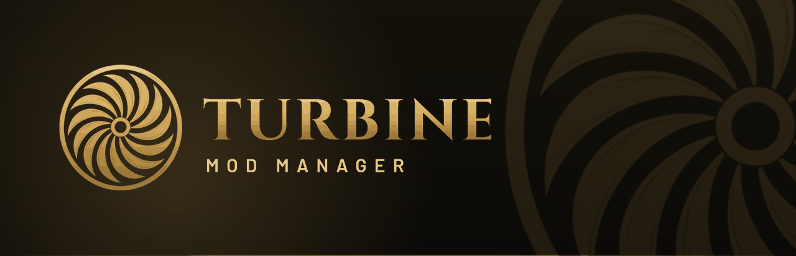
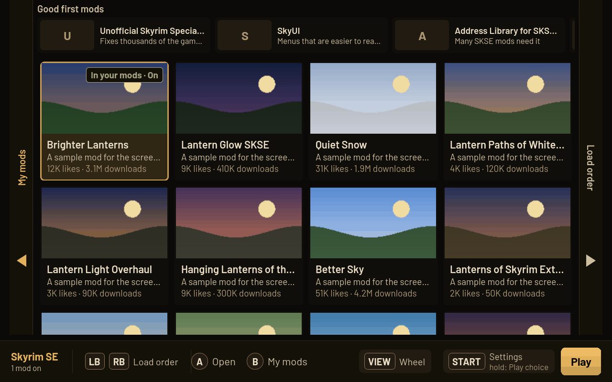
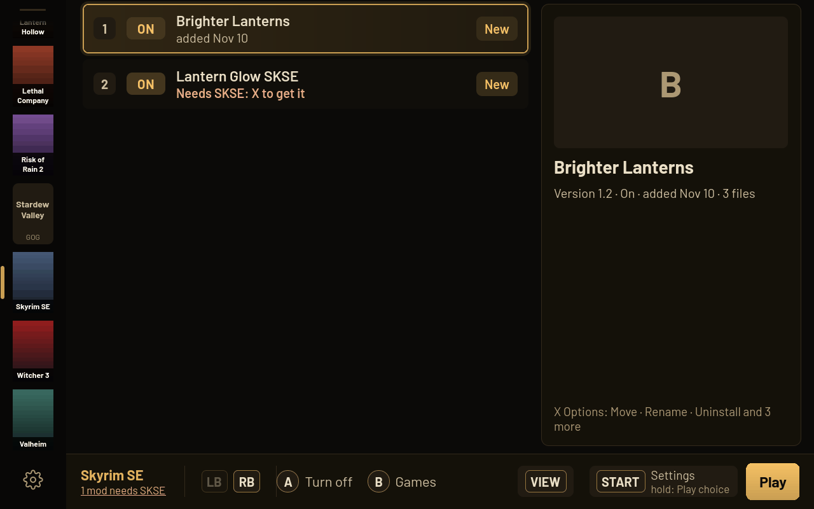
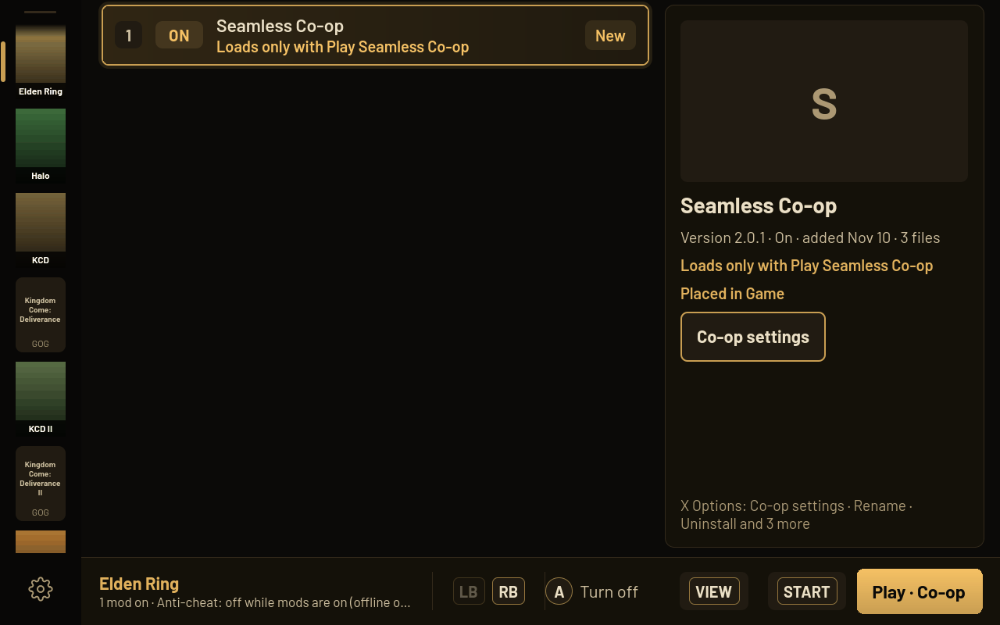
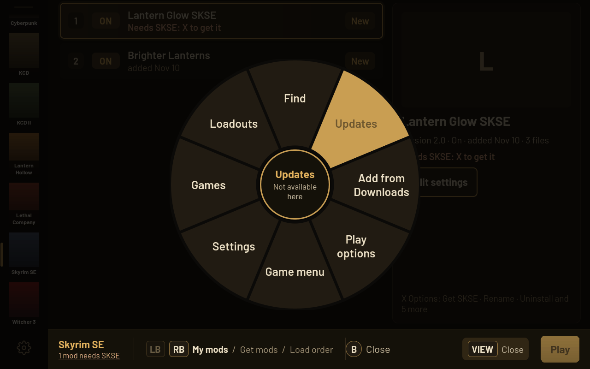

Your whole library
Steam games and Heroic games (Epic and GOG), on internal storage or an SD card. Games Turbine has no rules for still work: it reads a mod's files to see where they go, and asks once when it can't tell.

Mod any of your games on a SteamOS handheld.
From the couch, in Game Mode, with the controller.
Free and open source. For SteamOS on the Steam Deck, Legion Go, ROG Ally and other handhelds.
Pick a game, find a mod, press Play. Turbine handles where the files go, what each mod needs, and how to take it all back out.
Steam games and Heroic games (Epic and GOG), on internal storage or an SD card. Games Turbine has no rules for still work: it reads a mod's files to see where they go, and asks once when it can't tell.
Nexus Mods is built in: browse with pictures, likes and downloads, then get a mod with one press. Thunderstore for the games that use it, plus zip, 7z and rar files you already have. A free Nexus account works.
Skyrim's plugin load order with one-press sort. Mod installers with options show their choices on screen. Script loaders like SKSE, SMAPI and BepInEx come from their official sources.
Cyberpunk 2077's RED4ext, Cyber Engine Tweaks, ArchiveXL and TweakXL are checked before Play. The Witcher 3 gets its mod priority and script conflicts, Kingdom Come its mod order.
Elden Ring, Nightreign, Armored Core VI, Dark Souls III and Sekiro run their mods through me3. The game folder is never touched, and you start them from Steam's own Play.
See what each mod needs, whether you have it, and which mods need it. Mod updates from Nexus and Thunderstore show in one place, and Turbine updates itself.
Turbine only removes files it placed and backs up any game file a mod replaces. Saves are backed up before a modded Play. Play without mods, go back to a setup that worked, or turn every mod off.
Keep named setups per game and switch between them. Share one as a file, or as a Thunderstore code your friends can paste in.
Controller first, with touch, keyboard and mouse just as good. Interface size from 50% to 150%. An optional Steam menu plugin turns mods on or off from Quick Access.




Real Turbine screens with made-up sample mods.
Big modded RPG
Get SkyUI and a few lighting mods from Nexus. Turbine shows the installer choices on screen, tells you a mod needs SKSE and helps you get it, and sorts the load order.
Framework mods
Turbine knows the frameworks and what each one needs, and checks them before Play. If something is missing, you hear it from Turbine, not from a crash.
Friends night
Paste the Thunderstore code your friends use. Turbine fetches the same mods with BepInEx. Valheim and Risk of Rain 2 work the same way.
Co-op
Get it for Elden Ring, set the session password, then choose Play Seamless Co-op or solo with mods. The game folder stays as it was.
Any game
Add the mod anyway. Turbine reads its files and puts them where they belong, or asks once with its best guess ready. Undo is still one press.
Something broke
Play without mods to check, or go back to the last setup that played fine. Your saves were backed up before you started.
Where every file goes, loaders, load or mod order, and checks before Play.
Mods offline, game folder untouched, started from Steam's own Play.
Basic support for every other Steam and Heroic game: mods go where their files say, and Turbine asks once when it can't tell.
Online play stays clean. Turbine never adds mods to a game that needs its anti-cheat online, such as Apex Legends, Destiny 2 or Fortnite. Those games say why, and Play with mods is refused.
You do this once, in Desktop Mode. After that Turbine lives in your Steam library and keeps itself up to date.
In Desktop Mode, download TurbineModManager.flatpak. It goes to your Downloads folder.
Double-click it in Downloads and press Install in Discover. The first install takes a few minutes.
flatpak install --user ~/Downloads/TurbineModManager.flatpakIn the app launcher, right-click Turbine Mod Manager and choose Add to Steam.
Go back to Game Mode. Turbine is in your Library under Non-Steam. A short tour shows the buttons the first time.
With Decky Loader, Turbine gets a panel in Quick Access: mods on or off and Play for the game you're in. In Decky, open the gear, then Developer, then Install Plugin From URL, and paste:
https://github.com/Ravenor907/Turbine-Mod-Manager/releases/latest/download/Turbine-Decky.zip
No Developer tab? Turn on Developer Mode in Decky's General settings first.
| Do | Controller | Keyboard | Mouse |
|---|---|---|---|
| Select | A | Enter or Space | Click |
| Back | B | Esc | Back side button |
| Options | X | R | Right-click |
| Find | Y | F | |
| Pages | LB / RB | Q / E | Page names, Forward side button |
| Page up, down | LT / RT | Wheel | |
| Quick wheel | View | Hold Tab | |
| Settings | Start | Esc on a game's first page | |
| Play | Hold Start 3 seconds, or A on Play | Hold Space 3 seconds | Click Play |
| Pointer | Right stick | Mouse | |
| Size | Ctrl and + or - | Ctrl and wheel |
The hints at the bottom follow whatever you used last. Touch works for everything: tap to do, long-press for options.
Turbine never adds mods to a game that needs its anti-cheat to play online. The FromSoftware games run mods offline through me3, and Turbine says so plainly before the first modded Play. Don't take a save you modded offline into online play.
No. With a free account, Nexus's own download page opens, you press Slow download, and the mod is added and turned on. Premium skips that page. Thunderstore mods and files you already have need no account.
Turbine writes down every file it places and only ever removes those. Any game file a mod replaces is backed up and put back when the mod goes. Nothing inside a mod archive is ever run.
No. Turbine is made for SteamOS handhelds.
In Turbine open Settings, Help, Report a problem and press Save report. Then open an issue and attach the file. It holds no keys or passwords.
Turn your mods off, set each FromSoftware game's Compatibility back to your usual Proton in Steam, then remove Turbine in Discover.
Ready when you are.